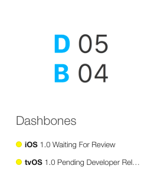

It is week #261 shares its name with a relatively large main belt asteroid called 216 Prymno. It also shares a name with Milwaukee Road 261, a Steam Locomotive built in 01944. Still in Africa, +261 is the dealing country code of Madagascar.
ISO weeks start on a Monday and end on a Sunday. We tend to post our weeknotes on Friday or Saturday. Last Sunday was our 5th birthday. To celebrate, we bought some owl shaped bluetooth speakers for the office. Technically, that was part of Week #260, but we forgot to post it on Friday, so happy late birthday to us on Week #261!
This week has also been some other astronomy talk. They have discovered the gravitational waves do exist. It was something that Einstein has speculated, now confirmed. In honour of that confirmation, we took the LIGO Chirp, as it’s known, and converted it into a ringtone for the iPhone. Now you can have it play each time you get a text or a call. Just download the file, drag it into iTunes and sync the “Tone” to your phone.
There are several great videos online about the source of the Gravitational Waves. It is thought two large black holes started to swirl around each other, picking-up more and more speed. As they approached the speed of light, all sorts of things started happening to the gravity around them. It created waves, like ripples in a pond that have slowly been dissipating for billions of years and we just detected one of those waves!
Dashbones
For awhile now we’ve been working on a iOS dashboard client. The name has been Dashbones, because it is your bare bones dashboard.
We finished-up our first attempt at a tvOS version which has been approved. Since the code between iOS and tvOS is so similar, we ported it over for iPhones and iPads. It works great and after a few false starts, is now Waiting for Review. It was rejected earlier in the week due to missing metadata. (The example JSON feed which is in the text in the app, was not in the Notes section when the app was submitted, so it was rejected.)
It has been an interesting ride to see how the review process has gone. We’re much smarter about what is needed when we make changes in the future.
Our next steps are finish the website and documentation, then clean-up issues people fine in the wild and start on a Apple Watch extension so you can get all the same data on a watch face, your phone or table or TV screen.
When it is all ready, we’ll let you know!
Invoices
We have been lucky enough to be able to send 1 invoice in for work we’re currently doing. It is rare that a company openly asks you to bill them 50% up-front and even rare for them to say bill us 100% up-front. So we jumped at that chance this week. We have a second invoice pending, it is just waiting to collect a few more hours before being sent off, but those hours have never materialised, so we’ll probably just close that account next week too. Our final invoice is an international bill for a tiny amount of time. We’ll bundle that with the next one because the fees alone don’t make it worthwhile for such a small bill.
Bric-à-brac
The DeLorean Motor Company is bring back their flagship car. Apparently, under new rules in the US, small batches of cars are not required to follow the same regulatory standards as large manufacturers, coupled with the fact that the car did this 20+ years ago, remakes of the same quality don’t have to reapply. This makes it possible to see 02017 DeLoreans rolling out to the public again. Strange to use the exact patterns from so long ago, but any changes would require expensive safety checks. This could also be away to gauge interest in an updated version.
The USPS, United States Postal Service, is getting into Augmented Reality with an app that transforms the iconic blue mailboxes into some seasonal or promotional design. While AR is interesting, the practicalities are limited. You need to tell people how and when they can use it, then people need to remember, have the app, start the app, point the camera, probably a few times, for very little reward for their effort. Over time, the experience will get smoother, but isn’t reality and imagination enough?